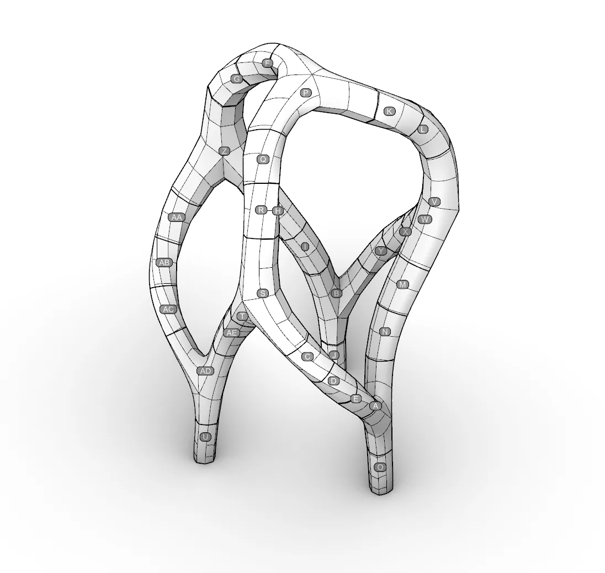

Together In Motion One The Esplanade, Elizabeth Quay, 2025
Commissioned by Dept. of Education
This artwork draws inspiration from the traditional dance practices of the Indigenous peoples of Western Australia, translating recorded movement into sculptural form. Its development considered the site’s rich Whadjuk Noongar history, particularly its enduring connection to the corroboree and Kening ceremonial dances led by Yagan in 1833. This significant event is interpreted as both an exhibition and a declaration of culture, law and presence.
A parallel influence is found in the expressive bush arches constructed by European colonists for proclamation celebrations and later Royal Jubilee welcomes, using native vegetation as decoration. Their function as symbolic gateways and thresholds informs the experience of moving through the sculpture. The memory of a former pavilion on the site also lingers as a shadow within the work.
Body markings associated with Kening ceremonies inspired the engraved and embossed patterns applied to the sculpture’s internal surfaces. The project brings together ancient knowledge, connections to Country, songlines and stories with digital data processing, experimental form-finding and future-focused technologies, realised through advanced fabrication methods and contemporary materials.
- Design: Daniel Giuffre, Andrei Smolik, Rick Vermey
- Year: 2025
- Client: Dept. of Education
- Collaborators: Yondee Shane Hansen, Karla Hart
- Size: 5m x 5m x 7.6m


